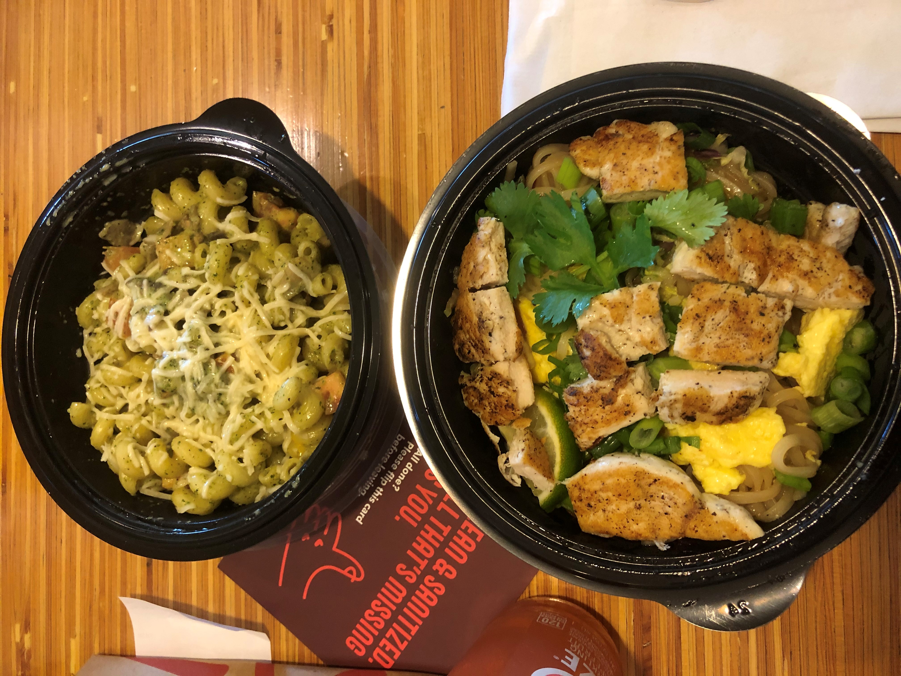
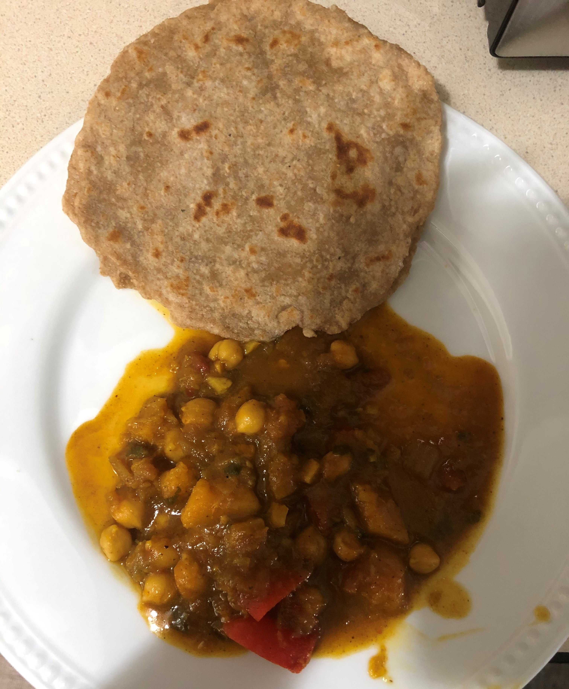
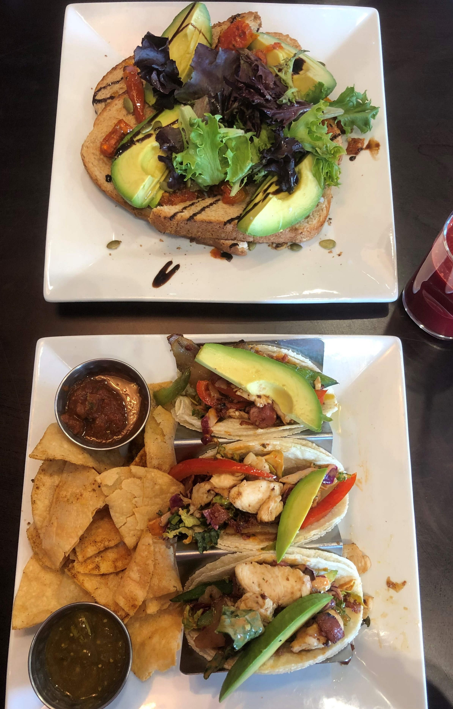
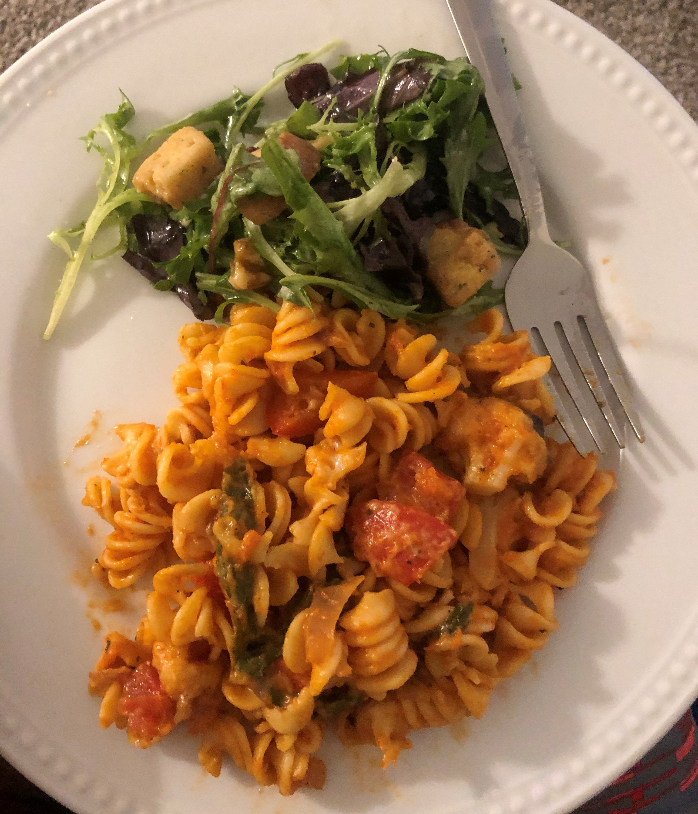
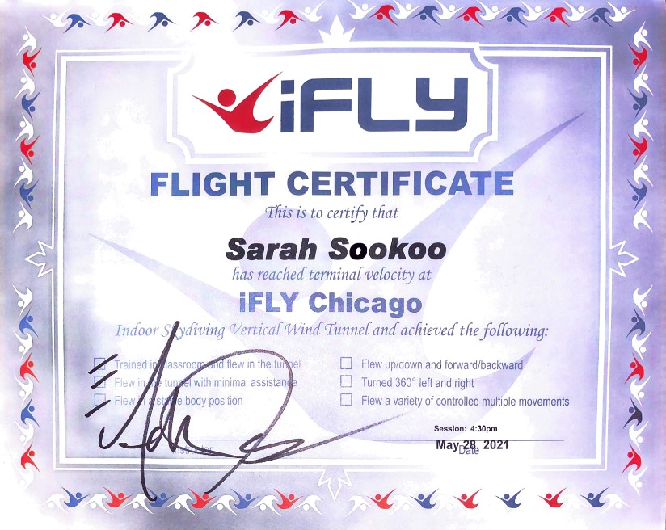

May 25th - May 30th
These 6 days I decided to take a vacation at Peoria, Illinois. My cousin moved out of my aunt's home in Queens to go live in Peoria for her job so I took a trip to help her out. Most of it was buying new furniture and setting up the apartment. This was a great way to get out of the house after school ended.
May 25th

This day was literally filled with traveling and it was so hectic. First I had to wake up at 8am because my dad had something to pick up in Manhattan and he wanted me to go with him. I got ready and ate breakfast. We left home at 8:30 because we had to be there for 9:30 and it takes around 45 minutes to get there. Once we got there, parking was HORRENDOUS. We did what we had to do and then we were on our way back home. We arrived home at about 11:20 and I planned to leave again at 1:20. I did some final packing, rested, called Tanmoy and did my makeup during the meantime. Then it was time to go. My dad and I packed the car and we stopped at Dunkin' Donuts to get 2 bagels. Next we went to pick my mom up from work and we were finally on our way to the airport ✈. The traffic there was SO bad. I was literally freaking out so much thinking I was going to miss my flight. We had a whole prayer session in the car and I calmed down a bit. Once we got to the airport I checked in and printed my boarding pass. Next I went through customs where they scanned me and my things.

That process was really fast but it went well. After that all I had to do was find my gate which was D10. It was quite a walk but I didn't get lost. I sat at the gate at 3:12 and we were going to start boarding the plane at 4:00 so that was perfect. Everything went well, I boarded the plane, put my carry on luggage on top, and sat at my window seat. The flight went amazing as we landed in Chicago earlier than expected and the landing didn't bother my ears that much. Then once I deboarded, I had to find the gate H2 for the next flight to Peoria. That process was also smooth. The Chicago airport is like the one you see in movies. Once I found the gate and knew where I had to be, I decided to explore a bit. I had enough time until boarding so I walked around, saw some Chicago food attractions, bought some tea, and used the restroom. Then it was boarding time again at 6:45 (Illinois time)! This plane was SO small so they checked in my carry on luggage was a valet bag for free. The plane was so small that I couldn't even stand up straight. Crazy. This flight also landed early but we took some time to exit the plane. Once I exited, I got my luggage and I saw my cousin! We drove home and I ate some paneer tikka masala that she cooked for dinner. We talked for a while, I showered and then I was off to bed! Also, Illinois is one hour behind New York so my day was 25 hours long!! It was a very long (literally), busy, hectic, tiring, kinda scary, but fun day!
May 26th
Today once I woke up, I checked my phone for a while and just stayed in bed. Tanmoy and I called for a bit and I gave him a small tour of the apartment. Then I got ready for the day and had waffles and fruits for breakfast. The WiFi guy was coming today so we had to wait for him before we went out. He came, got the job done, and I finally had WiFi!! Then we left home to go get some things for the house. We went to Home Goods first where we got towels, hangers, drinking glasses, and some little things for the kitchen. We barely got anything we wanted so we went to Bed Bath and Beyond. We bought a set of bowls, plates and cups, a trash can, a mirror, a clock, utensils, couch pillows, and some other little things. Next we went to eat at Noodles and Company. I got Pad Thai and my cousin got pesto pasta.
Next we went to the supermarket because we had to cook! We bought some things for breakfast, vegetables, and some baking goods. That was all we needed so we were then on our way back home. We took everything out the bags and set them up around the apartment. Everything fit well and looked nice. We cooked roti and chana for dinner and baked chocolate cupcakes for dessert. Both of us took on our own roles and worked together to make everything.
Once we finished eating everything we got ready to go to East Peoria River Front Park . My cousins boyfriend came over to the apartment for a while to meet me and eat some of the food we cooked. He was really nice and friendly. There wasn't anyone at the river front since it was so late at night. It was very beautiful, quiet, and calm. Then we came back home, showered, and went to sleep.
May 27th
 Today we didn't really have much planned because it was supposed to rain. I had a video call with Tanmoy in the morning and I ate cereal and milk for breakfast. My cousin needed sneakers so we went shopping early so we didn't get caught in the rain. First we went to DSW and I got some fancy sandals on clearance that I can wear with some of my dresses. Then we went to Old Navy. My cousin got some clothes but I just got some cute masks. Next we decided to get food at Childers Eatery My cousin got avocado toast and I got chicken chipotle tacos. The food was actually really good. Then we went to JCPenney mainly because there was a Sephora in the store and I needed concealer. We walked around for a bit and we found this nice massage place. We both got 20 minutes massages and it felt so good! Once it was done, we were on our way home. I called Tanmoy for a bit and showed him what I got. Next, we started cooking dinner. Tonight we made pasta and some salad. We set up the TV so we could watch a movie and eat dinner. My cousin's boyfriend came over and we all watched Schitts Creek and ate. He left after a while but my cousin and I continued watching. Once it got late, we showered and went to sleep!
May 28th
Today we planned to drive to Chicago. The drive from Peoria to Chicago is about 2 hours and 45 minutes. We got ready and left home at 11 so we estimated that we would arrive there by 2pm. We arrived in Chicago at about 2:15 because there was a little bit of traffic and it was cold, rainy, and breezy. Our first stop was Batter & Berries where we got brunch. I got an alfredo omelette and hashbrowns and my cousin got french toast with strawberries, blueberries and ice cream. We finished that up at around 3:30. We had a reservation for indoor skydiving at iFly for 4:30 so next we were on our way there. The people were so energetic and friendly. Once it was our turn, we put on the uniforms and helmet and then we had to go into a classroom where they taught us how to position ourselves and what certain hand signals mean. Then we went into the wind tunnel. In the tunnel there is over 100mph of wind rushing to you, which causes you to fly around. You have to stay in a position as if you were laying down on your stomach and completely straight. They let you fly around at a medium height for a while to get used to it and then they let you do the high rise where you fly all the way at the top. You go in with the instructor because if you're not in the correct position, you won't fly properly so he'll be there to hold onto you.
Once that was over, they gave us certificates. Next we went to get gas and were on our way to Garrets Popcorn Shops. Apparently this popcorn shop is really famous in Chicago and is considered their most craveable snack. We got the famous Garret Mix popcorn. Before we left Chicago we wanted to get souvenirs, so we went to a shopping center/mall. We went at around 7 but surprisingly, everything was closed. It was so weird, like a scary movie. 7pm is not that late but the entire mall was dead. So after that, we were on our way home. There were some roads that went for miles without streetlights so everything looked pitch black. There were no other cars on the road to give off some light so it was literally liked were were driving into darkness or nothing-ness. Scary. Overall though, we were vibing, eating popcorn and having karaoke sessions in the car. We finally arrived home and I had a short video call with Tanmoy. Then I showered and ate dinner while we watched some more Schitts Creek. We had cupcakes and went to sleep!